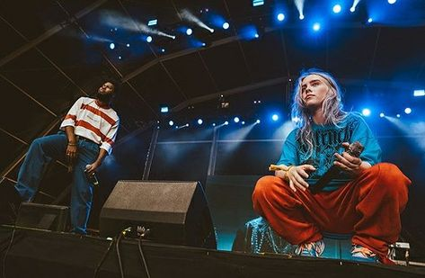
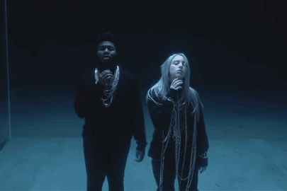
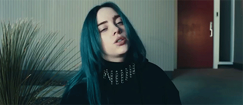

LOVELY
Thought I found a way
Thought I found a way, yeah
But you never go away
So I guess I gotta stay now

Oh, I hope some day I'll make it out of here
Even if it takes all night or a hundred years
Need a place to hide, but I can't find one near
Wanna feel alive, outside I can't fight my fear
Isn't it lovely, all alone?
Heart made of glass, my mind of stone
Tear me to pieces, skin to bone
Hello, welcome home

Walkin' out of town
Lookin' for a better place
Something's on my mind
Always in my head space

Oh, I hope some day I'll make it out of here
Even if it takes all night or a hundred years
Need a place to hide, but I can't find one near
Wanna feel alive, outside I can't fight my fear

Isn't it lovely, all alone?
Heart made of glass, my mind of stone
Tear me to pieces, skin to bone
Hello, welcome home
Whoa, yeah
Yeah, ah
Whoa, whoa
Hello, welcome home
ORUSA